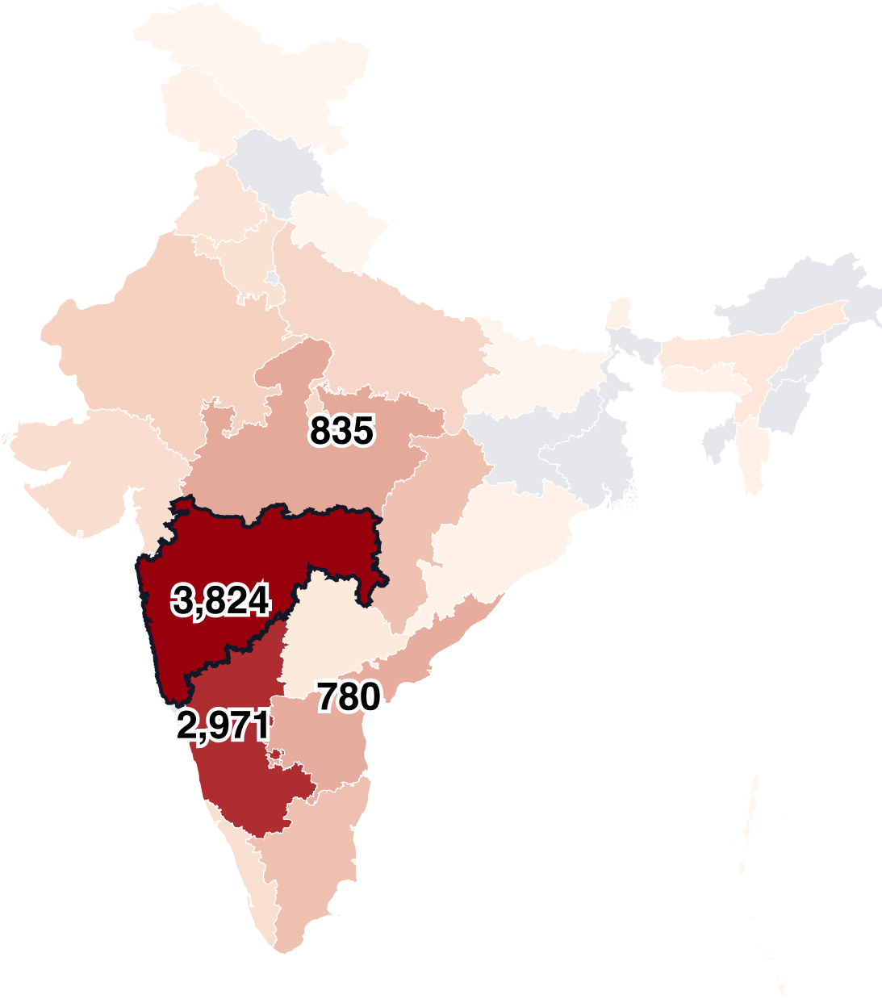

Book Project
Agriculture and Patriarchy: Growing and Severing the Roots of Male Dominance
Agriculture and Patriarchy examines how commercial agriculture and intensive natural resource extraction consolidate male power—and how climate change may erode it. Focusing on canal-irrigated sugarcane production in India, the book combines historical data, surveys, interviews, ethnography, behavioral experiments, and natural experiments to trace how agricultural development reshaped household and political decision-making while deepening unsustainable water use.
The book’s second part examines how climate change is unsettling the agricultural foundations of male dominance in India. As drought undermines farming livelihoods, a growing “marriage crisis” among male farmers is weakening men’s confidence and public participation while increasing women’s bargaining power within families. These shifts complicate conventional accounts of women as climate victims and show how poorly designed agricultural adaptation may re-entrench gender inequality.

